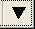

作図の詳細ダイアログのグループタブで、平均/中央値パーセンタイルの形状を編集できます。
パーセンタイルタブで、平均/中央値にチェックを付けた場合、グループタブにある推移表で、平均値シンボルの形状と平均値シンボルの内部、中央値シンボルの形状と中央値シンボルの内部を利用できます。
上述のオプションで、推移 = なしにしているとパーセンタイルのシンボルタイプはパーセンタイルタブの設定に従います。
パーセンタイルタブでは特定のパーセンタイルで表示するシンボルについて編集します。
変更したいシンボルの横にある下向き三角をクリックします。 ギャラリーからシンボルを選びます。
シンボルをなしに設定したい場合は、シンボル一覧から空のセルを選択します。
作図の詳細ダイアログのグループタブで、平均/中央値パーセンタイルの形状を編集できます。 パーセンタイルタブで、平均/中央値にチェックを付けた場合、グループタブにある推移表で、平均値シンボルの形状と平均値シンボルの内部、中央値シンボルの形状と中央値シンボルの内部を利用できます。 上述のオプションで、推移 = なしにしているとパーセンタイルのシンボルタイプはパーセンタイルタブの設定に従います。 |
ボックスチャートにカスタムパーセンタイルを表示するかどうか指定します。
<P,100-P>でのカスタムパーセンタイルにチェックが入っている場合、パーセンタイルの値をPのコンボボックスで選択もしくは入力することができます。
シンボル一覧から希望のシンボルを選択するには、このセクションの下にある下向き三角をクリックします。
ドロップダウンリストからすべてのシンボルのサイズを設定します。
シンボルの縁の太さを設定します。単位はポイントサイズです。シンボルサイズによるスケールがオフの場合は、シンボルタブの縁の太さと同じです。
すべてのシンボルの縁の色を設定します。
すべてのシンボルの塗り色を設定します。シンボル一覧の一部のシンボル タイプには、個別の塗りつぶしの色がなく、塗りつぶしにエッジの色を使用するか、塗りつぶしの色がないことに注意してください。
四分位点のシンボルの透明度を変更します。スライダを動かすか、コンビネーションボックスに0～100の整数を入力します。0は全てのシンボルは透過しておらず、100は完全に透過している事を示しています。
シンボルの透過率に準じるにチェックが付いている場合、パーセンタイルシンボルの透過率は線と同じになります。